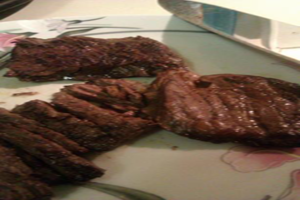

- Recipes
Grilled Skirt Steak
Argentina-Grilled Skirt Steak with Cilantro Chimichurri Sauce
Ingredients Needed:
Procedure:
1. Season skirt steak with salt and pepper and place in a large resealable plastic bag. Add in the lemon zest, garlic, red pepper flakes, and olive oil. Seal the plastic bag and massage ingredients into skirt steak to incorporate evenly. Refrigerate for at least 1 hour or up to 24 hours. 2. Remove skirt steak from refrigerator, take meat out of the plastic bag and place on a plate. Remove any large chunks of garlic. Let skirt steak sit at room temperature for 15 minutes. 3. Meanwhile, make the chimichurri sauce. In a medium size bowl, whisk together the garlic, onion, lemon juice, cilantro, olive oil, sherry vinegar, and red pepper flakes. Season with salt and pepper. 4. Place skirt steak on a hot grill and cook for about 5 minutes until meat releases easily from the grill. Flip meat over and cook for another 5 minutes for medium rare. Place meat on a clean plate and let it rest for 15 minutes before slicing. Slice across the grain into thin strips. To serve, spoon chimichurri sauce over meat.
Style Spiced Meatballs
Lebanese-Style Spiced Meatballs
Ingredients Needed:
Procedure:
1.Combine meatballs mixture in a large mixing bowl and stir *just* until combined. 2.Cover and refrigerate until mixture is firm. (I do this first thing in the morning.). 3.Preheat oven to 350 degrees. 4.Form into 1 1/2" balls and place on a parchment-lined baking sheet. 5.Bake about 20 minutes or until browned and no longer pink in the center. 6.If desired, serve with plain yogurt that has been drained or tahini. 7.Delicious served over quinoa accompanied by a fresh salad with seasonal ingredients or steamed veggies in the cooler months. 8.Yield: 18-22 meatballs.
Spinach, Beef & Rice
Lebanese-Spinach, Beef & Rice
Ingredients Needed:
Procedure:
1.In a cooking pot, add olive oil and heat for a moment. Add onions and sauté. Add ground beef and cook until beef is brown. Add allspice, cinnamon, and salt. Mix. Add spinach and sauté with meat for a moment. Once it’s all mixed well together, add water to the pot , just enough to cover the spinach Cover and let the spinach meat mixure boil and then turn it down to medium heat and let it simmer/boil for a good 30 minutes. Meanwhile, get a sauté pan and add some olive oil, the garlic, and the chopped cilantro and sauté’ that mixture together. Add cilantro/garlic mixture to the spinach (after the spinach has cooked for 30 minutes). Cover and let it simmer for about 15 more minutes. Serve with rice and squeeze lemon juice on top! 2.Using frozen chopped spinach works better than fresh spinach. It does not turn out the same if you use fresh. The frozen chopped is much better. I have tried both. Trust me! 3.Be sure when adding water to the pot that you don’t add too much. You want just enough to cover the spinach. The spinach will release some water too! 4.Squeezing the lemon on top of the spinach dish when it’s being served is the most important part of the dish! Don’t forget to do that, or you’ll miss out on the awesome taste of this dish!
Style Skirt Steak
Brazilian-Style Skirt Steak
Ingredients Needed:
Procedure:
1.Coat both sides of the steak in sea salt or kosher salt, either would be fine. 2.Pan-sear both sides of the steak, about 2-3 minutes on each side over medium-high heat. 3.Remove from pan and completely wrap steak in foil. 4.Grill or bake at 350 for about 30-40 minutes for a well done steak. 5.I usually serve this with a sea-salted potato (cover potato in sea salt, wrap in foil, bake for 1 hour on 350 degrees).
Baked Brazilian Beef
Brazilian-Baked Brazilian Beef
Ingredients Needed:
Procedure:
1.Cut sirloin tip into 1-inch cubes. 2.Place in casserole with garlic powder, onions, liquids and seasonings. 3.Cover and bake at 350° for 1 hour until beef is tender. 4.Thicken gravy with the blended flour and margarine. 5.Serve with mashed potatoes, noodles, or rice.